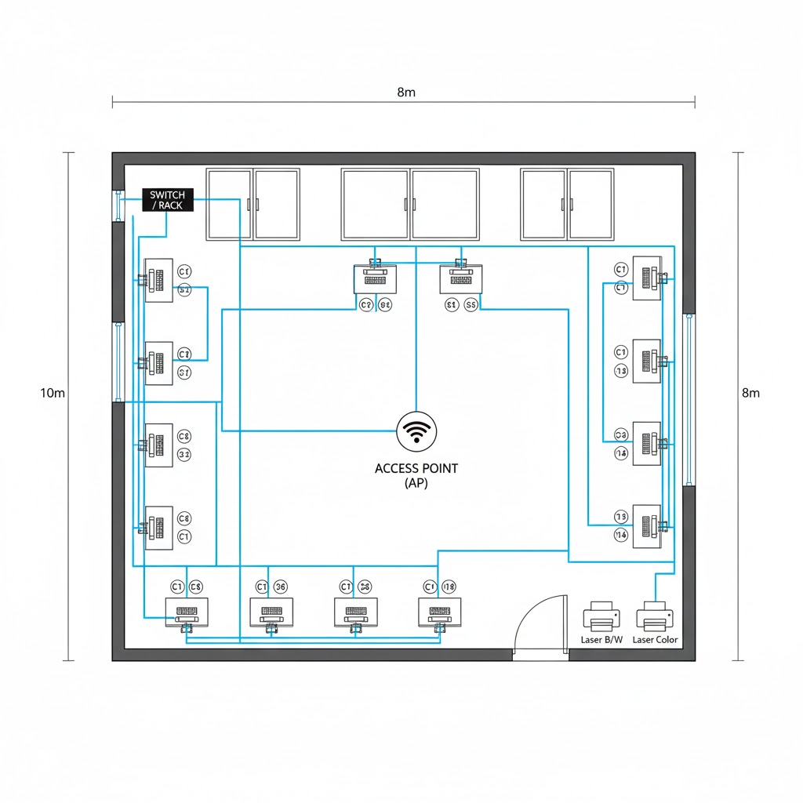
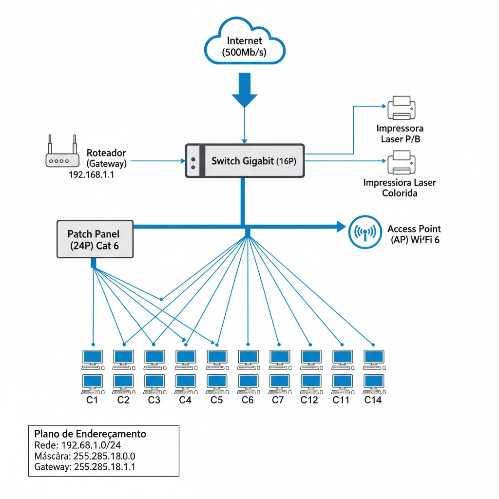

Disciplina: Redes de Computadores
Professor: Fabiano Lopes
Data: Nov/2025
Janderson Duarte, Caio Dias, Gabriel Oliveira, Yago Reis e Tomás
Escritório de Contabilidade - Dimensionamento e Orçamento
8 metros de largura × 10 metros de comprimento
Pé direito: 3,5 metros
14 pontos utilizando cabo categoria 6
1 Access Point suportando pelo menos 20 dispositivos
Sistemas com Windows, Office e navegadores
Softwares de contabilidade online
Mínimo de 500Mb/s
2 impressoras laser
1 monocromática + 1 colorida
| Item | Especificação Detalhada | Quantidade |
|---|---|---|
| Desktop (Ponto de Usuário) | Processador: Intel Core i5 (12ª Gen. ou sup.) / AMD Ryzen 5. Memória RAM: 16 GB DDR4. Armazenamento: SSD NVMe de 512 GB. Placa de Rede: Gigabit Ethernet (10/100/1000 Mbps). Monitor: LED 23". | 14 |
| Item | Especificação Detalhada | Quantidade |
|---|---|---|
| Impressora Laser Monocromática (P/B) | Tecnologia Laser, velocidade ≥ 30 ppm, com conexão de rede (cabeada ou Wi-Fi) | 1 |
| Impressora Laser Colorida | Tecnologia Laser, velocidade ≥ 20 ppm, com conexão de rede (cabeada ou Wi-Fi) | 1 |
| Item | Especificação Detalhada | Quantidade |
|---|---|---|
| Roteador | Suporte a banda ≥ 500 Mb/s (Fornecido pela operadora) | 1 |
| Switch de Rede | 16 Portas Gigabit Ethernet (10/100/1000 Mbps), Desempilhado (Unmanaged/Smart Managed) | 1 |
| Access Point (AP) Corporativo | Suporte ≥ 20 dispositivos, tecnologia Wi-Fi 5 (802.11ac) ou Wi-Fi 6 (802.11ax), Dual Band | 1 |
| Cabeamento de Rede | Bobina de Cabo Cat 6 U/UTP (100% Cobre, Homologado Anatel) | 1 (305m) |
| Conectores RJ45 | Macho (Plug) e Fêmea (Keystone) Categoria 6 | 30 |
| Patch Panel | 24 portas Cat 6 | 1 |
| Rack de Parede | 8U ou 10U de profundidade adequada | 1 |
| Item | Especificação Detalhada | Quantidade |
|---|---|---|
| Sistema Operacional | Windows 11 Pro (Licença por volume ou OEM) | 14 |
| Pacote de Produtividade | Microsoft Office Home & Business 2021 (Licença vitalícia) | 14 |
| Software de Contabilidade | Acesso via navegador/web | N/A |
Dimensões do Escritório: Largura: 8m | Comprimento: 10m | Pé Direito: 3.5m
Total de Pontos de Rede: 15 (14 Computadores + 1 Access Point)
| Ponto de Destino | Descrição | Fórmula do Comprimento (m) | Metragem por Cabo (m) |
|---|---|---|---|
| Ponto 1 (C1) | Computador (Parede Superior) | 7.0 (Vertical Fixa) + 0.5 (Horizontal) + 2.0 (Slack) | 9.5m |
| Ponto 2 (C2) | Computador (Parede Superior) | 7.0 (Vertical Fixa) + 2.0 (Horizontal) + 2.0 (Slack) | 11.0m |
| Ponto 3 (C3) | Computador (Parede Superior) | 7.0 (Vertical Fixa) + 4.0 (Horizontal) + 2.0 (Slack) | 13.0m |
| Ponto 4 (C4) | Computador (Parede Superior) | 7.0 (Vertical Fixa) + 6.0 (Horizontal) + 2.0 (Slack) | 15.0m |
| Ponto 5 (C5) | Computador (Parede Superior) | 7.0 (Vertical Fixa) + 7.5 (Horizontal) + 2.0 (Slack) | 16.5m |
| Ponto 6 (C6) | Computador (Parede Direita) | 7.0 (Vertical Fixa) + 8.5 (Horizontal) + 2.0 (Slack) | 17.5m |
| Ponto 7 (C7) | Computador (Parede Direita) | 7.0 (Vertical Fixa) + 10.5 (Horizontal) + 2.0 (Slack) | 19.5m |
| Ponto 8 (C8) | Computador (Parede Direita) | 7.0 (Vertical Fixa) + 12.5 (Horizontal) + 2.0 (Slack) | 21.5m |
| Ponto 9 (C9) | Computador (Parede Direita) | 7.0 (Vertical Fixa) + 14.5 (Horizontal) + 2.0 (Slack) | 23.5m |
| Ponto 10 (C10) | Computador (Parede Inferior) | 7.0 (Vertical Fixa) + 18.0 (Horizontal) + 2.0 (Slack) | 27.0m |
| Ponto 11 (C11) | Computador (Parede Inferior) | 7.0 (Vertical Fixa) + 20.0 (Horizontal) + 2.0 (Slack) | 29.0m |
| Ponto 12 (C12) | Computador (Parede Inferior) | 7.0 (Vertical Fixa) + 22.0 (Horizontal) + 2.0 (Slack) | 31.0m |
| Ponto 13 (C13) | Computador (Parede Esquerda) | 7.0 (Vertical Fixa) + 1.0 (Horizontal) + 2.0 (Slack) | 10.0m |
| Ponto 14 (C14) | Computador (Parede Esquerda) | 7.0 (Vertical Fixa) + 3.0 (Horizontal) + 2.0 (Slack) | 12.0m |
| Ponto 15 (AP) | Access Point (Teto Central) | 3.5 (Vertical Única) + 6.5 (Horizontal Teto) + 2.0 (Slack) | 12.0m |
| TOTAL | 259.0m | ||
Conclusão da Metragem: O total estimado de cabo Cat 6 necessário é de 259.0 metros. Para a compra, será adquirida uma bobina padrão de 305 metros.
| Item | Quantidade de Pontos | Conectores por Ponto | Total de Conectores Necessários |
|---|---|---|---|
| Computadores | 14 | 2 (Patch Panel + Tomada) | 28 |
| Access Point | 1 | 2 (Patch Panel + Ponto Teto) | 2 |
| TOTAL | 30 Conectores RJ45 | ||
| Item | Qtd | Orçamento 1 (R$) | Orçamento 2 (R$) | Orçamento 3 (R$) |
|---|---|---|---|---|
| Subtotal Computadores (14 un) | 14 | 49.000,00 | 45.500,00 | 47.600,00 |
| Subtotal Impressoras (2 un) | 2 | 4.900,00 | 4.700,00 | 4.700,00 |
| Subtotal Rede (Switch, AP, Cabo, etc.) | Vários | 2.670,00 | 2.275,00 | 2.774,00 |
| Subtotal Software (14 licenças) | 14 | 37.800,00 | 36.400,00 | 39.200,00 |
| TOTAL GERAL (R$) | 94.370,00 | 88.875,00 | 94.274,00 |
O Orçamento 2 apresentou o menor valor total e foi utilizado como referência para a composição final do investimento.
| Item | Especificação | Qtd | Custo Unitário (R$) | Custo Total (R$) |
|---|---|---|---|---|
| Hardware - Computadores | Desktop i5/16GB/512GB NVMe/Monitor 23" | 14 | 3.250,00 | 45.500,00 |
| Impressora Laser P/B | Modelo de menor custo (O2) | 1 | 950,00 | 950,00 |
| Impressora Laser Colorida | Modelo de menor custo (O3) | 1 | 3.500,00 | 3.500,00 |
| Switch 16 Portas Gigabit | Unmanaged (O2) | 1 | 480,00 | 480,00 |
| Access Point Wi-Fi 6 | Corporativo (O2) | 1 | 700,00 | 700,00 |
| Cabo Cat 6 U/UTP (305m) | Bobina (O2) | 1 | 480,00 | 480,00 |
| Conectores RJ45/Keystone Cat 6 | Unidade (O2) | 30 | 4,50 | 135,00 |
| Patch Panel 24 portas Cat 6 | (O2) | 1 | 220,00 | 220,00 |
| Rack de Parede 8U | (O2) | 1 | 350,00 | 350,00 |
| Componentes de Rede Diversos | (Tomadas, Patch Cords, etc.) | Vários | *Incluso no Custo Total* | 462,00 |
| Software - Windows 11 Pro | Licença | 14 | 750,00 | 10.500,00 |
| Software - Office Home & Business 2021 | Licença | 14 | 1.850,00 | 25.900,00 |
| Subtotal Hardware e Software | 89.177,00 | |||
| Serviços | Instalação, Configuração e Infraestrutura (Estimativa de 15%) | 13.376,55 | ||
| TOTAL GERAL DO PROJETO | 102.553,55 | |||

A planta física demonstra o layout do escritório, a disposição dos 14 computadores (C1 a C14), as 2 impressoras, o Access Point (AP) e a localização do Rack/Switch.
| Componente | Função na Rede | Conectividade |
|---|---|---|
| Roteador da Operadora | Gateway (Banda Larga) | Conecta-se ao Switch |
| Switch Gigabit (16P) | Distribuição e comutação (Camada 2) | Conecta o Roteador, o Patch Panel, as Impressoras |
| Patch Panel (24P) | Organização e terminação do cabeamento horizontal | Conecta-se ao Switch via Patch Cords |
| 14 Pontos (C1-C14) | Acesso de Usuários (LAN) | Cabos Cat 6 → Patch Panel → Switch |
| 1 Ponto (AP) | Acesso de Usuários (WLAN) | Cabo Cat 6 → Patch Panel → Switch |
Rede: 192.168.1.0/24
Máscara: 255.255.255.0
Gateway: 192.168.1.1 (Roteador/Switch L3)

Internet (500Mb/s) → Roteador (Gateway) → Switch Gigabit
Switch Gigabit → 14 Computadores + 1 Access Point + 2 Impressoras